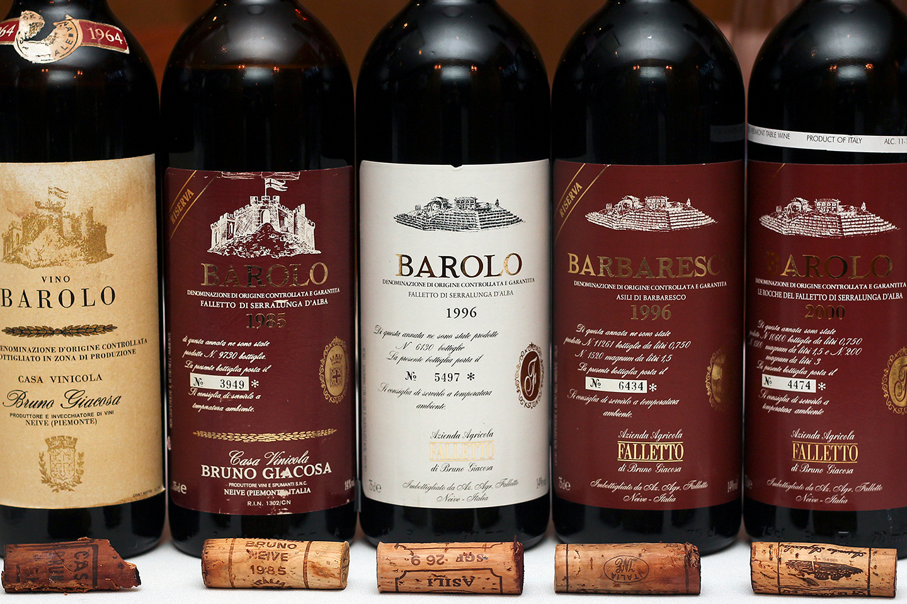
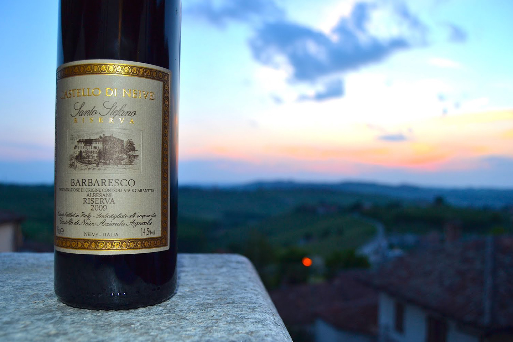
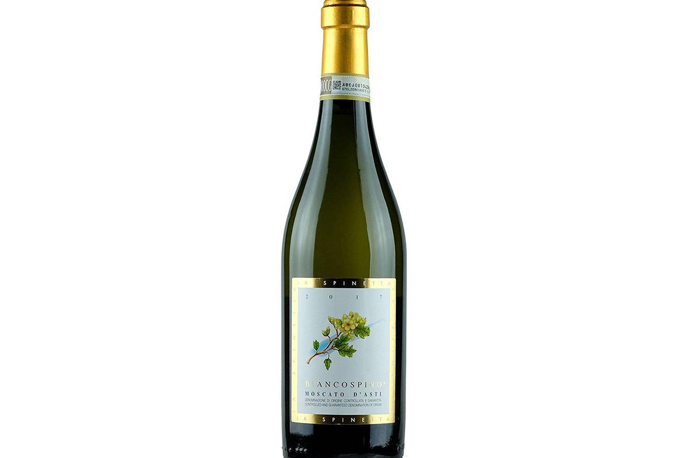
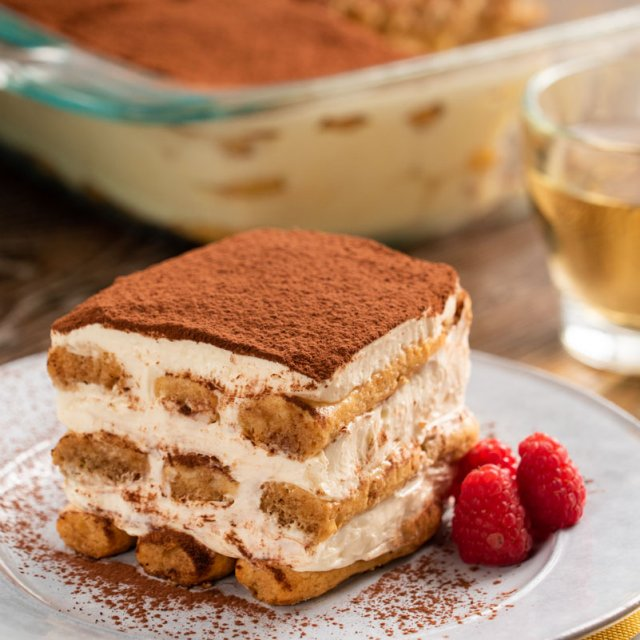

Vinos italianos
Los primeros vinos fueron elaborados con uvas silvestres y su
producción data de alrededor 8000 a.C., hasta la domesticación de la
vid que se cree fue lograda por los egipcios aproximadamente en el
año 3000 a.C.
En la actualidad, son los vinos italianos los que han
conseguido mejor reputación por la calidad de sus productos, además
de encontrarse entre los 10 mayores productores de vino en el mundo.
Romano Dal Forno, Amarone della Valpolicella

Barolo/Barbaresco, Bruno Giacosa Barolo Le Rocche del Falletto
Castello di Neive Barbaresco
Moscato d'Asti. La Spinetta Moscato d'Asti
Il dolce
Los postres de Italia tienen influencias de diferentes regiones:
árabes, alemanas, francesas, etc. De hecho, la influencia árabe es
más importante en los postres, ya que muchos de los ingredientes
imprescindibles para su preparación vinieron de esa región. Entre
ellos se puede mencionar el pistacho, los higos, las nueces, las
almendras, la fruta confitada y las uvas pasas, entre otros.
Existe una gran variedad, los más conocidos internacionalmente
son el tiramisú, la pana cotta, el canolli o el panettone. Y el más
famoso de estos es quizás el tiramisú, que se hace a partir de queso
mascarpone, café, cacao y pan.
Tiramisú
Pana cotta